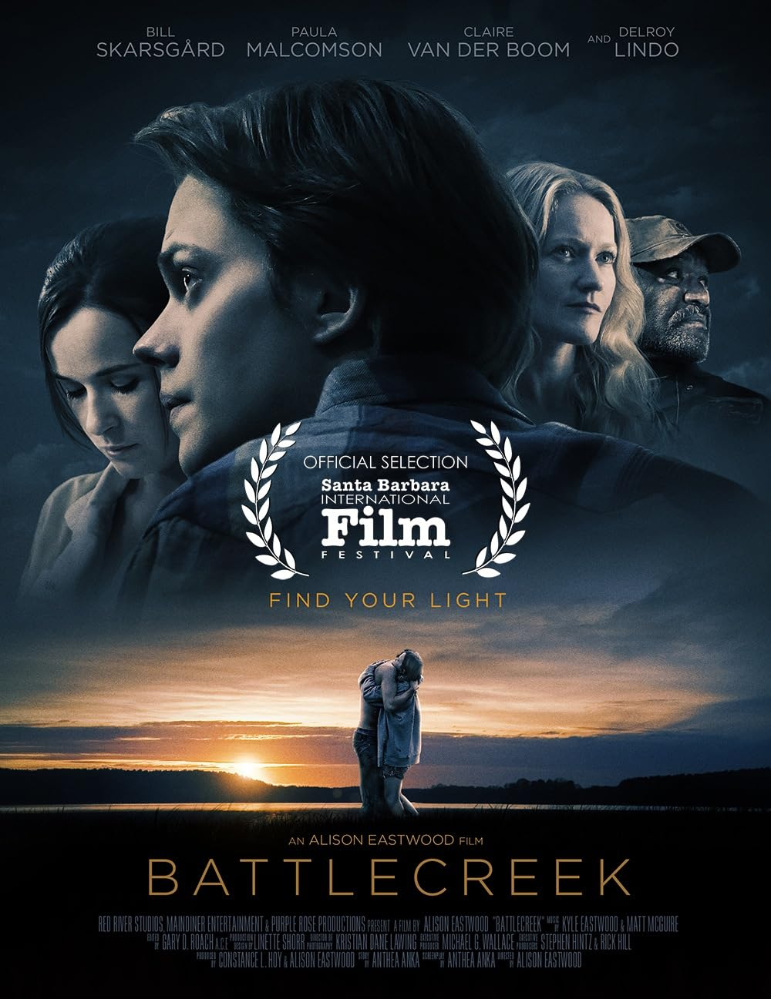

Feature Film & Publishing
Stories under pressure.
Independent Film • True Stories • Literary Adaptation
Character-driven films drawn from true stories, literary work, and lived history.
View the SlateIn Development
The Slate
Six distinct worlds connected by history, identity, and consequence. Public previews are concise; verified industry partners may request private materials.
About
Flare Gun Films
Flare Gun Films is an independent production company founded by writer-producer Stephen Hintz. The company develops character-driven features from true stories, literary material, and personal history—projects with a clear point of view and something real at stake.
Hintz received “based upon a screenplay by” credit and served as an associate producer on The Hill. His additional work includes executive producing Battlecreek and co-writing The Forever Tree, which premiered at the Bentonville Film Festival.
Experience & Proof

The Hill
Writing credit and associate producer

Battlecreek
Executive producer

The Forever Tree
Co-writer • Bentonville Film Festival premiere
Contact
Start with the right project.
For production, representation, talent, financing partnerships, sales, distribution, and press inquiries.
Industry InquiriesFlare Gun Films does not accept unsolicited scripts, treatments, concepts, or other creative materials.